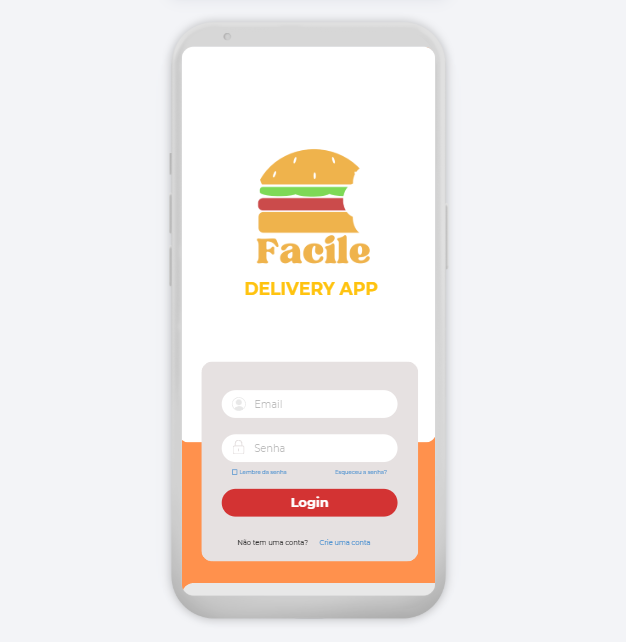
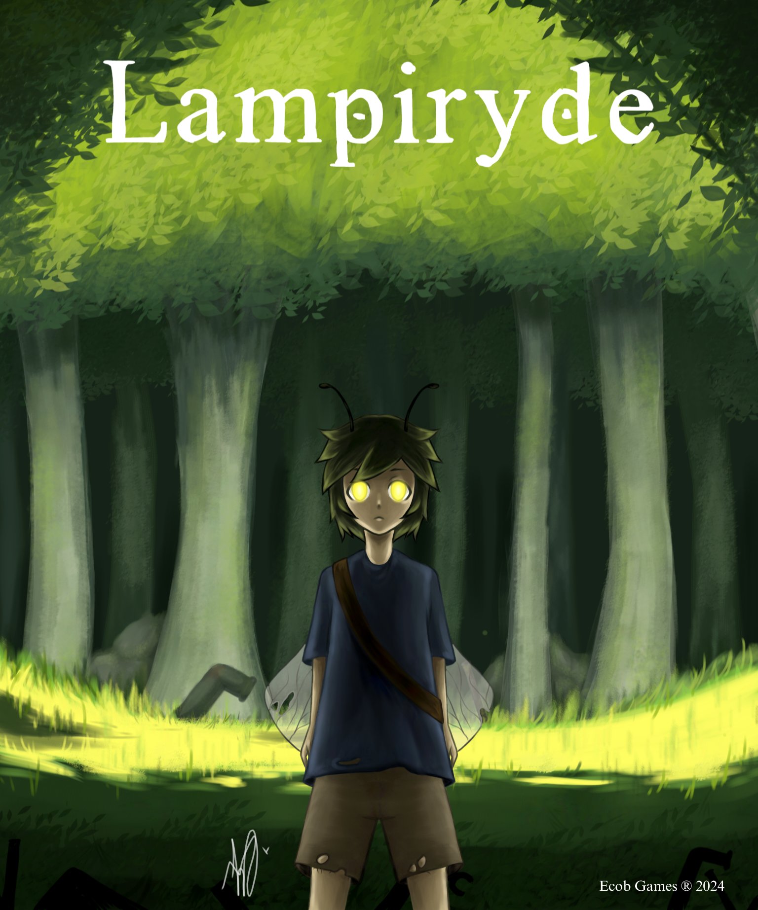
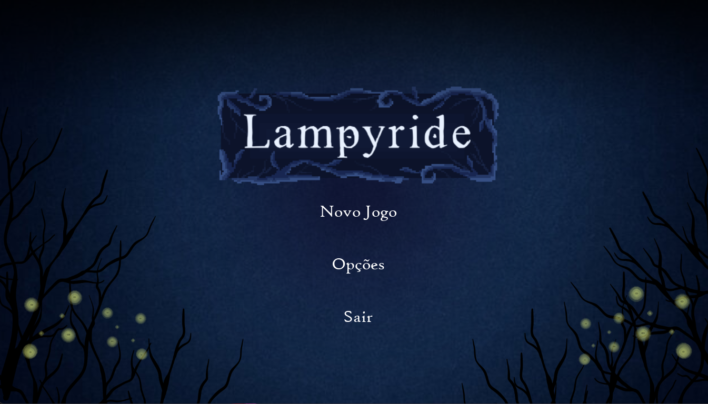
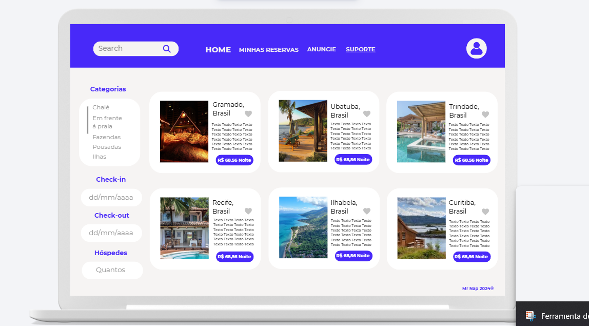
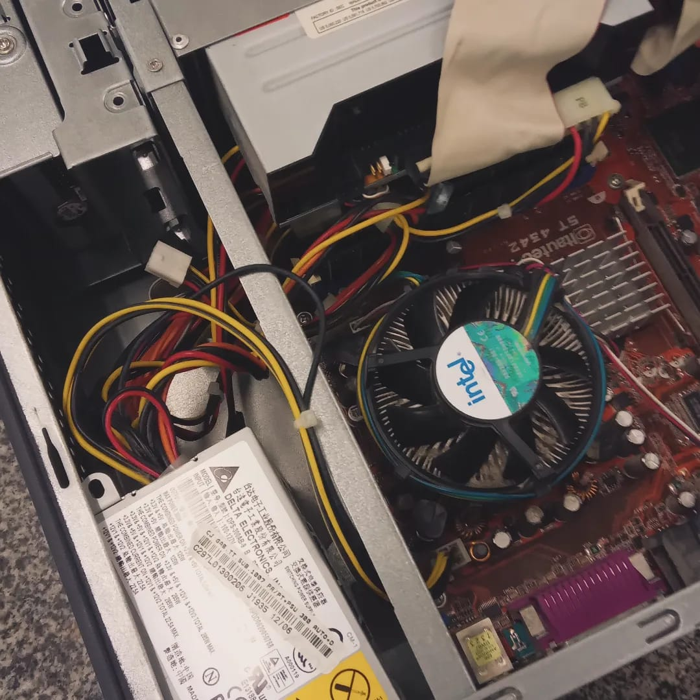

Análise de Projetos e Sistemas
Traabalhamos com a metodologia ágil, aprendemos conceitos como scrum e kanban, com foco em scrum. Desenvolvemos
diagramas de casos de uso, e prototipamos um site utilizando flutter flow e canva.

Técnicas de Programação e Algoritmo
Desenvolvemos projetos em python e iniciamos os estudos em javascript. Aprendemos conceitos como while,
for, matrizes e tkinter por meio de listas de exercícios.
Design Digital
Na matéria de Design Digital, trabalhamos principalmente na construção de um jogo,
feito por grupos de quatro pessoas. Produzi junto da minha equipe o game "Lampyride",
que conta a história de um menino-vagalume com a missão de restaurar o mundo destruído por robôs.
No projeto atuei na parte artística e criativa, sendo responsável por desenhar os personagens e
cutscenes. A seguir, segue o poster do jogo, feito por mim e a tela de carregamento feita pela equipe:


Programação Web I
Aprendemos o básico de HTML, e fomos introduzidos pouco a pouco ao CSS. Tivemos atividades práticas
semanais, onde fazíamos sites cada vez mais complexos.
Banco de dados I
Fomos introduzidos ao SQL, e aprendemos a criar bancos de dados, tabelas, e a fazer consultas utilizando o SQL.
Tivemos atividades práticas semanais, onde realizavamos listas de exercícios, e nosso maior projeto foi a construção
de um banco de dados fictício para uma empresa de hotéis, junto com o protótipo do site feito no canva:

Fundamentos da Informática
Em F.I., aprendemos sobre hardware e seus componentes, tendo aulas práticas de desmontagem
montagem de computadores. Também fizemos pesquisas sobre a origem dos computadores e documentos
sobre inicialização dos computadores, tivemos aulas práticas de montagem e análise de hardware, e
aprendemos a usar ferramentas de manutenção.
